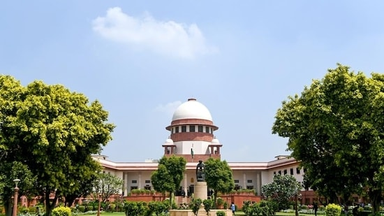

For the first time, the Supreme Court went live on Tuesday as the hearing of the cases - scheduled to be livestreamed during the day - could be seen online. Of the three cases scheduled to be livestreamed, one of the cases was from Maharashtra - Team Uddhav Thackeray against Team Eknath Shinde - amid a row over the symbol of Shiv Sena with the Election Commission already involved in the matter too. Lawyer Kapil Sibal could be seen making arguments - this was the second hearing that was broadcast live.
 HTSMART Go To Second page